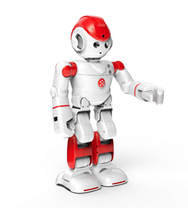
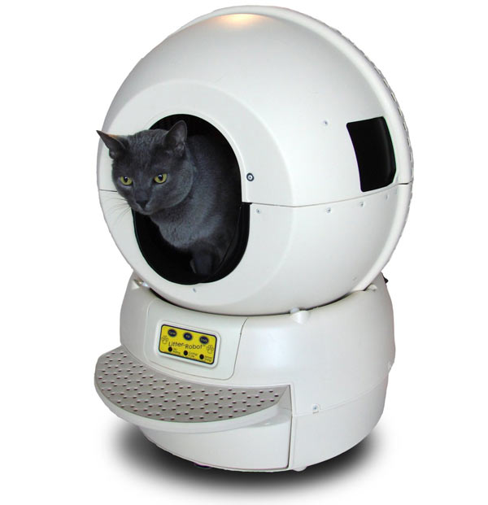

Welcome to the Robot Store!
Intoducing the Care-O-Bot 4

Care-O-bot is the product vision of a mobile robot assistant to actively support humans e.g. in their daily life, in hotels, health care institutions or hospitals, developed by the Fraunhofer Institute for Manufacturing Engineering and Automation.
Intoducing the Alpha 2

UBTECH's Alpha 2 humanoid robot is designed as an interactive family companion capable of accomplishing a range of typical household tasks. Alpha 2 stands 17 inches tall, is 9 inches wide and weighs about 5 lb. Alpha 2 can take pictures and videos, make calls, check voice mails, read and send texts and emails, and control WiFi-enabled office equipment. Alpha 2 can also post to your social media accounts using voice commands.
Intoducing the Litter Box

No more worries about cleaning the litter box when you have the litter robot at home. The large trash space inside the litter robot is good enough to hold several days of waste, and thus gives you the time and freedom to do things that you enjoy. This litter robot has several advanced features like patented litter sifting system, no rake that can clog or jam, no special bags, can work with any clumpy litter, reduces odor dramatically, has a large capacity, and is reliable and safe. It also comes with a 90 day money back guarantee and with 18 month of full warranty. If you are a cat lover, litter robot is a useful gadget to avoid the mess and make your life easier.
Select your robot now